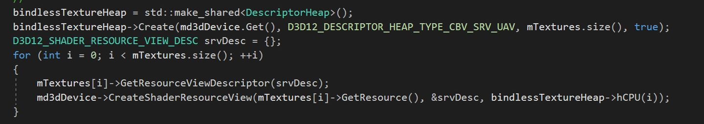

DirectX multiple textures
texture array

Texture2DArray gTexArray : register(t0);
float4 PS(VertexPosHTex pIn) : SV_Target
{
float4 texColor = gTexArray.Sample(gSam, float3(pIn.Tex, gTexIndex));
return texColor;
}
inline UINT D3D11CalcSubresource(UINT MipSlice, UINT ArraySlice, UINT MipLevels )
{ return MipSlice + ArraySlice * MipLevels; }
bindless texture
与传统的TextureArray不同之处在于，Shader读取时完全不对贴图在物理内存中排列有任何要求，这就意味着我们可以在一个队列中放入任意数量，任意大小，任意格式的贴图，其自由度要远高于传统的TextureArray。 
Texture2D gDiffuseMap[num] : register(tX, spaceX);
 这里为啥uv是乘以3采样的？？
这里为啥uv是乘以3采样的？？
virtual texture
基本思路是，会将纹理的mipmap chain分割为相同大小的tile或page,这里的纹理叫虚纹理，然后通过某种映射，映射到一张内存中存在的纹理，这里的纹理是物理纹理，在游戏视野发生变化的时候，一部分物理纹理会被替换出去，一部分物理纹理会被加载。